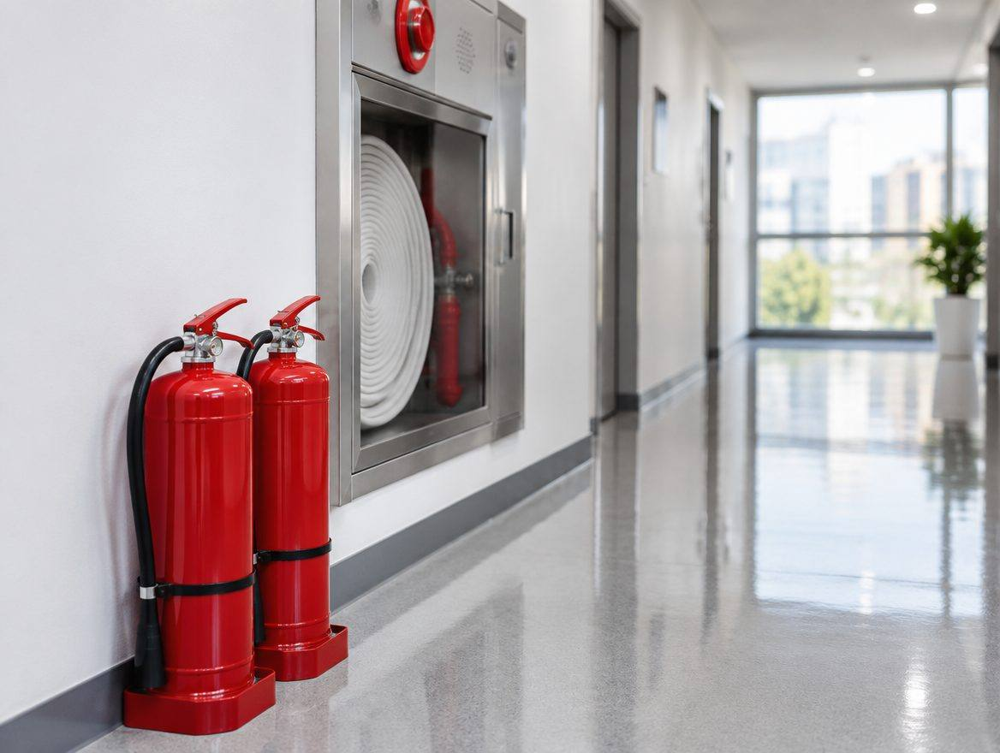
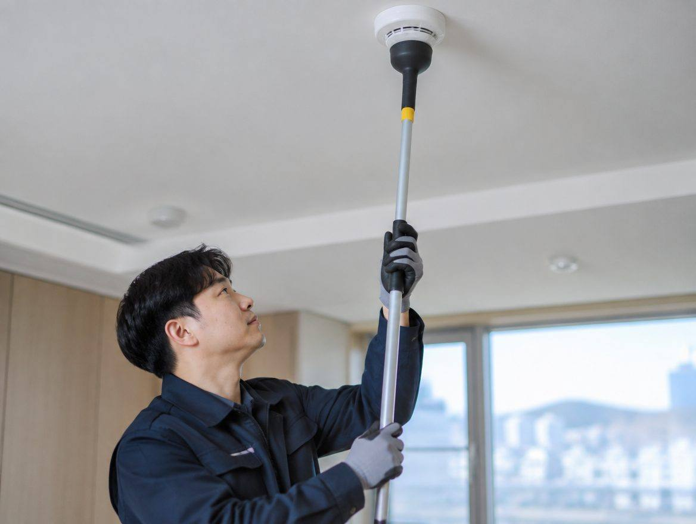
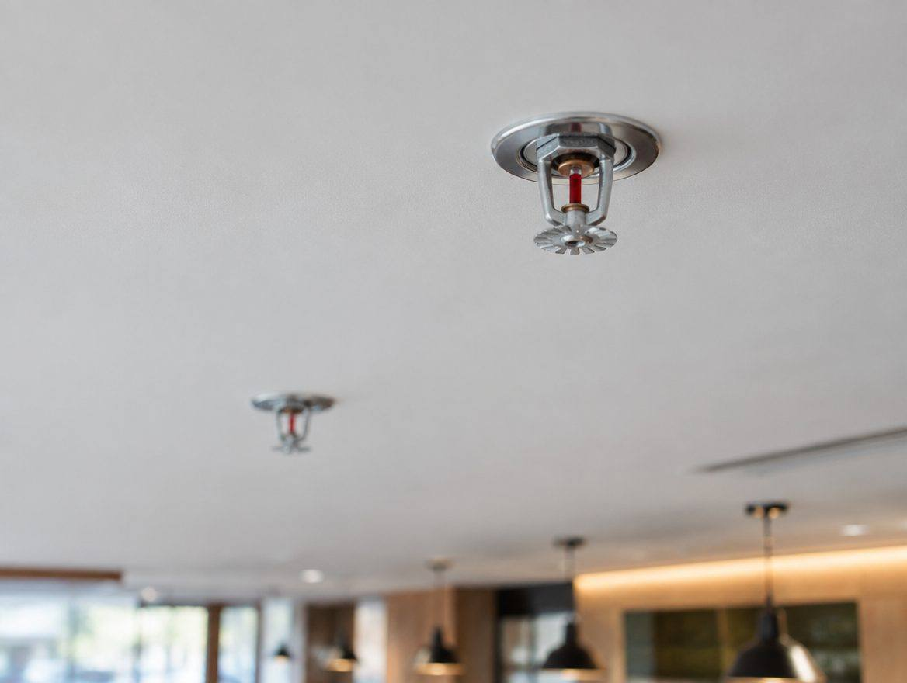

안전한 소방은 어떤 곳인가요?
안전한 소방은 포항시에서 소방시설 공사 일을 하는 곳입니다. 포항 식당 · 학원 · 사무실 소방시설 공사와 완비증명 · 방염 필증 대행.
- 상호
- 안전한 소방
- 업종
- 소방시설 공사
- 서비스 지역
- 포항 · 경주 · 울산
- 영업시간
- 평일 09:00 ~ 18:00
- 주소
- 포항시 00로 00
- 업종별 필요 설비 사전 안내
- 인허가 일정 역산 관리
- 준공 서류 일괄 인계
SERVICE
안전한 소방이 하는 일
포항 식당 · 학원 · 사무실 소방시설 공사와 완비증명 · 방염 필증 대행.
PROCESS
진행 순서
- 도면 · 업종 확인
- 필요 설비 산정 · 견적
- 시공
- 소방 검사 대응
- 필증 · 서류 인계
PHOTO
현장 · 매장 사진
예시 사진입니다. 실제 사이트에는 사장님 매장 · 현장 사진이 들어갑니다.



FAQ
자주 묻는 질문
어떤 업종이 완비증명이 필요한가요?
일반음식점 · 휴게음식점 일부 · 학원 · PC방 · 노래연습장 등 다중이용업소가 대상입니다. 면적과 층에 따라 달라 현장 확인 후 안내드립니다.
기간은 얼마나 걸리나요?
설비가 갖춰진 경우 1~2주 안팎입니다. 공사가 필요하면 공정에 따라 달라집니다.
인테리어 업체와 같이 진행할 수 있나요?
네. 천장 · 벽체 공사 전에 배관 위치를 맞추는 것이 비용을 줄이는 방법입니다.
인허가 일정 상담
안전한 소방 · 010-0000-0000